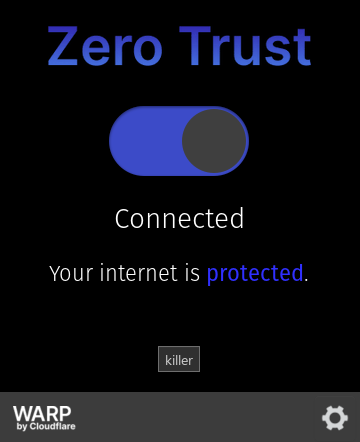

cloudfare warp VPN
使用warp进行校园网免流
目录
前排感谢cloudflare提供的免费代理。
另外，不知道什么原因 23.7.20补充：hk和中国代理节点限制了wg直连 ，warp导出的配置在wireguard里面用不了，但是用客户端没问题。
如何配置(仅windows)
warp用起来很简单，上tg找个代刷 warp+ 账号的Bot。我用的是 @generatewarpplusbot ，输入 /generate 然后回答一个两位数加减法就可以获取一个剩余流量 22PB 的warp+的key，足够用到天荒地老了。
客户端的话要去1.1.1.1的官网下载。Windows，Mac，Linux，Android，IOS都有对应的客户端，官网在家宽下条件下被墙，需要科学上网。另外，Android的warp不能代理一些流媒体软件，比如说Youtube，其它平台的客户端没有这个问题。不过在安卓上使用浏览器还是可以看YouTube网页版的。
warp安装之后默认是普通账户。在电脑上，点击右下角的warp图标（截图是warp+的原因是我懒得退账号了）

点击齿轮左边像甲虫的按钮

输入机器人发送的密钥。现在就可以使用warp+的流量了。
关于手机客户端
试了一下，Android的客户端在校园网环境下无法直接连上warp+，需要先在科学上网的网络环境下先连接一次才可以连接，而且不支持纯ipv6的连接。但是ZeroTrust可以正常连接。（相当于无限流量的企业版warp+，也免费，但是需要绑一下付款方式，支持Paypal，并且可以通过一些手段绕过）
23.7.20更新：不知为何安卓端最近无法在校园网未登录情况下使用ZeroTrust免流。但是iPad和PC上使用正常。
关于实现PC端只连接ipv6入口（免流）
开发区校区的校园网不登录即可实现免流。已登录的可以到这个页面登出。
校部的校园网需要额外配置Cf对端IP类型为IPv6，请参考优选IP教程。
盘锦校区没有条件测试，但是应该也可以参考实现。
Linux系统下
客户端的话要去1.1.1.1的官网下载,下载得到的软件是跟window不太一样的,linux下必须要登陆teams,所以需要去cloudfare申请免费plan的账户,申请账户需要用到信用卡(可以用paypal),paypal帐号申请可以使用国内的银行卡,所以只要有国内银行卡就可以申请一个免费plan的cloudfare账户.
之后就可以登陆Linux下的cloudfare-warp

登陆之后就可以访问外网,但是如果想要配置ipv6还需要从命令行输入命令
首先使用github上提供的脚本获取可用的ipv6可用ip
1 | wget -N https://gitlab.com/Misaka-blog/warp-script/-/raw/main/files/warp-yxip/warp-yxip.sh && bash warp-yxip.sh |
获得可用的ipv6 ip地址后.通过下面的命令设置
1 | sudo warp-cli clear-custom-endpoint |
Linux的问题
- Linux下无法使用更换密钥的方式使用
关于速度
实测校园网环境网页版Youtube开启4K画质无压力。
7.20补充：300M电信宽带下实测带宽可以达到40M，可以在ios端原速流畅观看YouTube 1080p60的视频。
关于延迟
打游戏的话，试了试瓦，会定到港服，延迟在60ms左右，可以说是非常优秀了，毕竟不要钱。
5.14补充：晚上使用的话丢包会比较严重，对枪存在可感的延迟。
关于是否需要warp+
实测有无warp+或zerotrust对于代理的速度没有显著影响，但据说访问使用Cloudflare作为CDN的网站时，会提供加速功能并消耗流量。
关于网站可用性
ChatGPT可以正常登录和使用 更新：单纯使用warp已经无法解锁ChatGPT。似乎大部分的流媒体网站都可用。